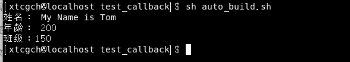

<!DOCTYPE HTML>
<html lang="zh-CN">
<head><meta name="generator" content="Hexo 3.8.0">
    <!--Setting-->
    <meta charset="UTF-8">
    <meta name="viewport" content="width=device-width, user-scalable=no, initial-scale=1.0, maximum-scale=1.0, minimum-scale=1.0">
    <meta http-equiv="X-UA-Compatible" content="IE=Edge,chrome=1">
    <meta http-equiv="Cache-Control" content="no-siteapp">
    <meta http-equiv="Cache-Control" content="no-transform">
    <meta name="renderer" content="webkit|ie-comp|ie-stand">
    <meta name="apple-mobile-web-app-capable" content="我的博客 - blog">
    <meta name="apple-mobile-web-app-status-bar-style" content="black">
    <meta name="format-detection" content="telephone=no,email=no,adress=no">
    <meta name="browsermode" content="application">
    <meta name="screen-orientation" content="portrait">
    <link rel="dns-prefetch" href="https://lives.xtcgch.ink">
    <!--SEO-->

<meta name="description" content="脑容量不够，笔记来凑">


<meta name="robots" content="all">
<meta name="google" content="all">
<meta name="googlebot" content="all">
<meta name="verify" content="all">
    <!--Title-->


<title>回调 | 我的博客 - blog</title>


    <link rel="alternate" href="/atom.xml" title="我的博客 - blog" type="application/atom+xml">


    <link rel="icon" href="https://blog.xtcgch.ink/img/background/海绵宝宝.ico">

    


<link rel="stylesheet" href="/css/bootstrap.min.css?rev=3.3.7">
<link rel="stylesheet" href="/css/font-awesome.min.css?rev=4.5.0">
<link rel="stylesheet" href="/css/style.css?rev=@@hash">


    


    

</head>

</html>
<!--[if lte IE 8]>
<style>
    html{ font-size: 1em }
</style>
<![endif]-->
<!--[if lte IE 9]>
<div style="ie">你使用的浏览器版本过低，为了你更好的阅读体验，请更新浏览器的版本或者使用其他现代浏览器，比如Chrome、Firefox、Safari等。</div>
<![endif]-->

<body>
    <header class="main-header" style="background-image:url(https://blog.xtcgch.ink/img/head-bg.jpg)">
    <div class="main-header-box">
        <a class="header-avatar" href="/" title="unistd68">
            
        </a>
        <div class="branding">
        	<!--<h2 class="text-hide">Snippet主题,从未如此简单有趣</h2>-->
            
                <h2> 脑容量不够，笔记来凑 </h2>
            
    	</div>
    </div>
</header>
    <nav class="main-navigation">
    <div class="container">
        <div class="row">
            <div class="col-sm-12">
                <div class="navbar-header"><span class="nav-toggle-button collapsed pull-right" data-toggle="collapse" data-target="#main-menu" id="mnav">
                    <span class="sr-only"></span>
                        <i class="fa fa-bars"></i>
                    </span>
                    <a class="navbar-brand" href="https://lives.xtcgch.ink">我的博客 - blog</a>
                </div>
                <div class="collapse navbar-collapse" id="main-menu">
                    <ul class="menu">
                        
                            <li role="presentation" class="text-center">
                                <a href="https://blog.xtcgch.ink/"><i class="fa "></i>主页</a>
                            </li>
                        
                            <li role="presentation" class="text-center">
                                <a href="https://blog.xtcgch.ink/categories/原理/"><i class="fa "></i>原理</a>
                            </li>
                        
                            <li role="presentation" class="text-center">
                                <a href="https://blog.xtcgch.ink/categories/代码/"><i class="fa "></i>代码</a>
                            </li>
                        
                            <li role="presentation" class="text-center">
                                <a href="https://blog.xtcgch.ink/categories/开源/"><i class="fa "></i>开源</a>
                            </li>
                        
                            <li role="presentation" class="text-center">
                                <a href="https://blog.xtcgch.ink/categories/面试/"><i class="fa "></i>面试</a>
                            </li>
                        
                            <li role="presentation" class="text-center">
                                <a href="https://blog.xtcgch.ink/categories/其他/"><i class="fa "></i>其他</a>
                            </li>
                        
                            <li role="presentation" class="text-center">
                                <a href="https://blog.xtcgch.ink/archives/"><i class="fa "></i>时间轴</a>
                            </li>
                        
                    </ul>
                </div>
            </div>
        </div>
    </div>
</nav>
    <section class="content-wrap">
        <div class="container">
            <div class="row">
                <main class="col-md-8 main-content m-post">
                    <p id="process"></p>
<article class="post">
    <div class="post-head">
        <h1 id="回调">
            
	            回调
            
        </h1>
        <div class="post-meta">
    
    
    <span class="categories-meta fa-wrap">
        <i class="fa fa-folder-open-o"></i>
        <a href="https://blog.xtcgch.ink/categories/代码">
            代码
        </a>
    </span>
    

    
    <span class="fa-wrap">
        <i class="fa fa-tags"></i>
        <span class="tags-meta">
            
                
                    <a href="https://blog.xtcgch.ink/tags/C++" title="C++">
                        C++
                    </a>
                
            
        </span>
    </span>
    

    
        
        <span class="fa-wrap">
            <i class="fa fa-clock-o"></i>
            <span class="date-meta">2021/08/05</span>
        </span>
        
    
</div>

            
            
    </div>
    
    <div class="post-body post-content">
        <a id="more"></a>
<hr>
<p><strong>header_include.hpp</strong></p>
<figure class="highlight plain"><table><tr><td class="gutter"><pre><span class="line">1</span><br><span class="line">2</span><br><span class="line">3</span><br><span class="line">4</span><br><span class="line">5</span><br><span class="line">6</span><br><span class="line">7</span><br><span class="line">8</span><br><span class="line">9</span><br><span class="line">10</span><br><span class="line">11</span><br><span class="line">12</span><br><span class="line">13</span><br></pre></td><td class="code"><pre><span class="line">#ifndef _HEADER_INCLUDE_HPP</span><br><span class="line">#define _HEADER_INCLUDE_HPP</span><br><span class="line"></span><br><span class="line">#include &lt;iostream&gt;</span><br><span class="line">#include &lt;string&gt;</span><br><span class="line">#include &lt;mcheck.h&gt;</span><br><span class="line">#include &lt;thread&gt;</span><br><span class="line">#include &lt;memory&gt;</span><br><span class="line">#include &lt;queue&gt;</span><br><span class="line">#include &lt;functional&gt;</span><br><span class="line">#include &lt;future&gt;</span><br><span class="line"></span><br><span class="line">#endif</span><br></pre></td></tr></table></figure>
<p><strong>CallBack.hpp</strong></p>
<figure class="highlight plain"><table><tr><td class="gutter"><pre><span class="line">1</span><br><span class="line">2</span><br><span class="line">3</span><br><span class="line">4</span><br><span class="line">5</span><br><span class="line">6</span><br><span class="line">7</span><br><span class="line">8</span><br><span class="line">9</span><br><span class="line">10</span><br><span class="line">11</span><br><span class="line">12</span><br><span class="line">13</span><br><span class="line">14</span><br><span class="line">15</span><br><span class="line">16</span><br><span class="line">17</span><br><span class="line">18</span><br><span class="line">19</span><br><span class="line">20</span><br><span class="line">21</span><br><span class="line">22</span><br><span class="line">23</span><br><span class="line">24</span><br><span class="line">25</span><br><span class="line">26</span><br><span class="line">27</span><br><span class="line">28</span><br><span class="line">29</span><br><span class="line">30</span><br><span class="line">31</span><br><span class="line">32</span><br><span class="line">33</span><br><span class="line">34</span><br><span class="line">35</span><br><span class="line">36</span><br></pre></td><td class="code"><pre><span class="line">#ifndef _CALLBACK_H</span><br><span class="line">#define _CALLBACK_H</span><br><span class="line">#include&quot;header_include.hpp&quot;</span><br><span class="line"></span><br><span class="line">using namespace std;</span><br><span class="line"></span><br><span class="line">enum CallType</span><br><span class="line">&#123;</span><br><span class="line">    NAME,</span><br><span class="line">    AGE,</span><br><span class="line">    GRADE,</span><br><span class="line">&#125;;</span><br><span class="line"></span><br><span class="line">struct StCallBackMsg</span><br><span class="line">&#123;</span><br><span class="line">	CallType enCalltype;</span><br><span class="line">	string _strSeq;</span><br><span class="line">	string _strData;</span><br><span class="line">&#125;;</span><br><span class="line"> </span><br><span class="line">class CallBack</span><br><span class="line">&#123;</span><br><span class="line">public:</span><br><span class="line">    CallBack();</span><br><span class="line">    ~CallBack();</span><br><span class="line"> </span><br><span class="line">public:</span><br><span class="line">    void TestCallBack(StCallBackMsg Msg);</span><br><span class="line">public:</span><br><span class="line">    //PrintName m_PrintName;</span><br><span class="line">    function&lt;void(string)&gt; m_PrintName; </span><br><span class="line">    function&lt;void(int)&gt; m_PrintAge; </span><br><span class="line">    function&lt;void(int)&gt; m_PrintGrade; </span><br><span class="line">&#125;;</span><br><span class="line"></span><br><span class="line">#endif</span><br></pre></td></tr></table></figure>
<p><strong>CallBack.cpp</strong></p>
<figure class="highlight plain"><table><tr><td class="gutter"><pre><span class="line">1</span><br><span class="line">2</span><br><span class="line">3</span><br><span class="line">4</span><br><span class="line">5</span><br><span class="line">6</span><br><span class="line">7</span><br><span class="line">8</span><br><span class="line">9</span><br><span class="line">10</span><br><span class="line">11</span><br><span class="line">12</span><br><span class="line">13</span><br><span class="line">14</span><br><span class="line">15</span><br><span class="line">16</span><br><span class="line">17</span><br><span class="line">18</span><br><span class="line">19</span><br><span class="line">20</span><br><span class="line">21</span><br><span class="line">22</span><br><span class="line">23</span><br><span class="line">24</span><br><span class="line">25</span><br><span class="line">26</span><br><span class="line">27</span><br><span class="line">28</span><br><span class="line">29</span><br><span class="line">30</span><br><span class="line">31</span><br></pre></td><td class="code"><pre><span class="line">#include &quot;CallBack.hpp&quot;</span><br><span class="line">#include &quot;BaseCall.hpp&quot;</span><br><span class="line"> </span><br><span class="line">CallBack::CallBack()</span><br><span class="line">&#123;</span><br><span class="line">&#125;</span><br><span class="line"> </span><br><span class="line">CallBack::~CallBack()</span><br><span class="line">&#123;</span><br><span class="line">&#125;</span><br><span class="line"> </span><br><span class="line">void CallBack::TestCallBack(StCallBackMsg msg)</span><br><span class="line">&#123;</span><br><span class="line">	</span><br><span class="line">    switch (msg.enCalltype)</span><br><span class="line">    &#123;</span><br><span class="line">    case NAME:</span><br><span class="line">        m_PrintName(msg._strData);</span><br><span class="line">        break;</span><br><span class="line">    case AGE:</span><br><span class="line">        m_PrintAge(std::stoi(msg._strData));</span><br><span class="line">        break;</span><br><span class="line">    case GRADE:</span><br><span class="line">    &#123;</span><br><span class="line">	  m_PrintGrade(std::stoi(msg._strData));</span><br><span class="line">    &#125;</span><br><span class="line">        break;</span><br><span class="line">    default:</span><br><span class="line">        break;</span><br><span class="line">    &#125;</span><br><span class="line">&#125;</span><br></pre></td></tr></table></figure>
<p><strong>BaseCall.hpp</strong><br><figure class="highlight plain"><table><tr><td class="gutter"><pre><span class="line">1</span><br><span class="line">2</span><br><span class="line">3</span><br><span class="line">4</span><br><span class="line">5</span><br><span class="line">6</span><br><span class="line">7</span><br><span class="line">8</span><br><span class="line">9</span><br><span class="line">10</span><br><span class="line">11</span><br><span class="line">12</span><br><span class="line">13</span><br><span class="line">14</span><br><span class="line">15</span><br><span class="line">16</span><br><span class="line">17</span><br><span class="line">18</span><br><span class="line">19</span><br></pre></td><td class="code"><pre><span class="line">#ifndef _BASECALL_H</span><br><span class="line">#define _BASECALL_H</span><br><span class="line">#include&quot;header_include.hpp&quot;</span><br><span class="line">#include&quot;CallBack.h&quot;</span><br><span class="line"> </span><br><span class="line">class BaseCall</span><br><span class="line">&#123;</span><br><span class="line">public:</span><br><span class="line">    BaseCall();</span><br><span class="line">    ~BaseCall();</span><br><span class="line"> </span><br><span class="line">private:</span><br><span class="line">    static void onPrintName(string);</span><br><span class="line">    static void onPrintAge(int);</span><br><span class="line">    static void onPrintGrade(int);</span><br><span class="line">private:</span><br><span class="line">    std::shared_ptr&lt;CallBack&gt; m_CallBack;</span><br><span class="line">&#125;;</span><br><span class="line">#endif</span><br></pre></td></tr></table></figure></p>
<p><strong>BaseCall.cpp</strong><br><figure class="highlight plain"><table><tr><td class="gutter"><pre><span class="line">1</span><br><span class="line">2</span><br><span class="line">3</span><br><span class="line">4</span><br><span class="line">5</span><br><span class="line">6</span><br><span class="line">7</span><br><span class="line">8</span><br><span class="line">9</span><br><span class="line">10</span><br><span class="line">11</span><br><span class="line">12</span><br><span class="line">13</span><br><span class="line">14</span><br><span class="line">15</span><br><span class="line">16</span><br><span class="line">17</span><br><span class="line">18</span><br><span class="line">19</span><br><span class="line">20</span><br><span class="line">21</span><br><span class="line">22</span><br><span class="line">23</span><br><span class="line">24</span><br><span class="line">25</span><br><span class="line">26</span><br><span class="line">27</span><br><span class="line">28</span><br><span class="line">29</span><br><span class="line">30</span><br><span class="line">31</span><br><span class="line">32</span><br><span class="line">33</span><br><span class="line">34</span><br><span class="line">35</span><br><span class="line">36</span><br><span class="line">37</span><br><span class="line">38</span><br></pre></td><td class="code"><pre><span class="line">#include&quot;BaseCall.hpp&quot;</span><br><span class="line"> </span><br><span class="line"> </span><br><span class="line">BaseCall::BaseCall()</span><br><span class="line">&#123;</span><br><span class="line">    m_CallBack = make_shared&lt;CallBack&gt;();</span><br><span class="line">    m_CallBack-&gt;m_PrintName = bind(BaseCall::onPrintName, placeholders::_1);;</span><br><span class="line">    m_CallBack-&gt;m_PrintAge = bind(BaseCall::onPrintAge, placeholders::_1);</span><br><span class="line">    m_CallBack-&gt;m_PrintGrade = bind(BaseCall::onPrintGrade, placeholders::_1);</span><br><span class="line"></span><br><span class="line">    StCallBackMsg msg1=&#123;CallType::NAME,&quot;00000001&quot;,&quot;My Name is Tom&quot;&#125;;</span><br><span class="line">    StCallBackMsg msg2=&#123;CallType::AGE,&quot;00000002&quot;,&quot;200&quot;&#125;;</span><br><span class="line">    StCallBackMsg msg3=&#123;CallType::GRADE,&quot;00000003&quot;,&quot;150&quot;&#125;;</span><br><span class="line"> </span><br><span class="line">    m_CallBack-&gt;TestCallBack(msg1);</span><br><span class="line">    m_CallBack-&gt;TestCallBack(msg2);</span><br><span class="line">    m_CallBack-&gt;TestCallBack(msg3);</span><br><span class="line">&#125;</span><br><span class="line"> </span><br><span class="line">BaseCall::~BaseCall()</span><br><span class="line">&#123;</span><br><span class="line"> </span><br><span class="line">&#125;</span><br><span class="line"> </span><br><span class="line">void BaseCall::onPrintName(string strName)</span><br><span class="line">&#123;</span><br><span class="line">    printf(&quot;姓名： %s\n&quot;, strName.c_str());</span><br><span class="line">&#125;</span><br><span class="line"> </span><br><span class="line">void BaseCall::onPrintAge(int nAge)</span><br><span class="line">&#123;</span><br><span class="line">    printf(&quot;年龄： %d\n&quot;, nAge);</span><br><span class="line">&#125;</span><br><span class="line"> </span><br><span class="line">void BaseCall::onPrintGrade(int nGrade)</span><br><span class="line">&#123;</span><br><span class="line">    printf(&quot;班级：%d\n&quot;, nGrade);</span><br><span class="line">&#125;</span><br></pre></td></tr></table></figure></p>
<p><strong>main.cpp</strong><br><figure class="highlight plain"><table><tr><td class="gutter"><pre><span class="line">1</span><br><span class="line">2</span><br><span class="line">3</span><br><span class="line">4</span><br><span class="line">5</span><br><span class="line">6</span><br><span class="line">7</span><br><span class="line">8</span><br><span class="line">9</span><br></pre></td><td class="code"><pre><span class="line">#include&quot;header_include.hpp&quot;</span><br><span class="line">#include &quot;CallBack.hpp&quot;</span><br><span class="line">#include &quot;BaseCall.hpp&quot;</span><br><span class="line"></span><br><span class="line">int main()</span><br><span class="line">&#123;</span><br><span class="line">	BaseCall bc;</span><br><span class="line">	return 0;</span><br><span class="line">&#125;</span><br></pre></td></tr></table></figure></p>
<p></p>

    </div>
    
    <div class="post-footer">
        <div>
            
        </div>
        <div>
            
        </div>
    </div>
</article>

<div class="article-nav prev-next-wrap clearfix">
    
        <a href="/2021/08/05/windows下bat技巧/" class="pre-post btn btn-default" title="windows下bat技巧">
            <i class="fa fa-angle-left fa-fw"></i><span class="hidden-lg">上一篇</span>
            <span class="hidden-xs">windows下bat技巧</span>
        </a>
    
    
        <a href="/2021/05/10/内存泄漏检测/" class="next-post btn btn-default" title="内存泄漏检测">
            <span class="hidden-lg">下一篇</span>
            <span class="hidden-xs">内存泄漏检测</span><i class="fa fa-angle-right fa-fw"></i>
        </a>
    
</div>


    <div id="comments">
        
    
    <div id="vcomments" class="valine"></div>
    <script src="//cdn1.lncld.net/static/js/3.0.4/av-min.js"></script>
<script src="/assets/valine.min.js"></script>

    <script>
        new Valine({
            av: AV,
            el: '#vcomments',
            appId: 'XWA5gq7VCJybw7YQhf5HG20r-gzGzoHsz',
            appKey: '8FW1WEwrysHXaUD1bhGn2Rp8',
            placeholder: '说点什么吧',
            notify: true,
            verify: false,
            avatar: 'https://blog.xtcgch.ink/img/comment-avatar.jpg',
            meta: 'nick,mail'.split(','),
            pageSize: '10',
            path: window.location.pathname,
            lang: 'zh-CN'.toLowerCase()
        })
    </script>


    </div>


                </main>
                
                    <aside id="article-toc" role="navigation" class="col-md-4">
    <div class="widget">
        <h3 class="title">文章目录</h3>
        
            <p>暂无目录</p>
        
    </div>
</aside>

                
            </div>
        </div>
    </section>
    <footer class="main-footer">
    <div class="container">
        <div class="row">
        </div>
    </div>
</footer>

<a id="back-to-top" class="icon-btn hide">
	<i class="fa fa-chevron-up"></i>
</a>


    <div class="copyright">
    <div class="container">
        <div class="row">
            <div class="col-sm-12">
                <div class="busuanzi">
    
</div>

            </div>
            <div class="col-sm-12">
                <span>Copyright &copy; 2018
                </span> |
                <span>
                    Powered by <a href="//hexo.io" class="copyright-links" target="_blank" rel="nofollow">Hexo</a>
                </span> |
                <span>
                    Theme by <a href="//github.com/shenliyang/hexo-theme-snippet.git" class="copyright-links" target="_blank" rel="nofollow">Snippet</a>
                </span>
            </div>
        </div>
    </div>
</div>


<script src="/js/app.js?rev=@@hash"></script>

</body>
</html>